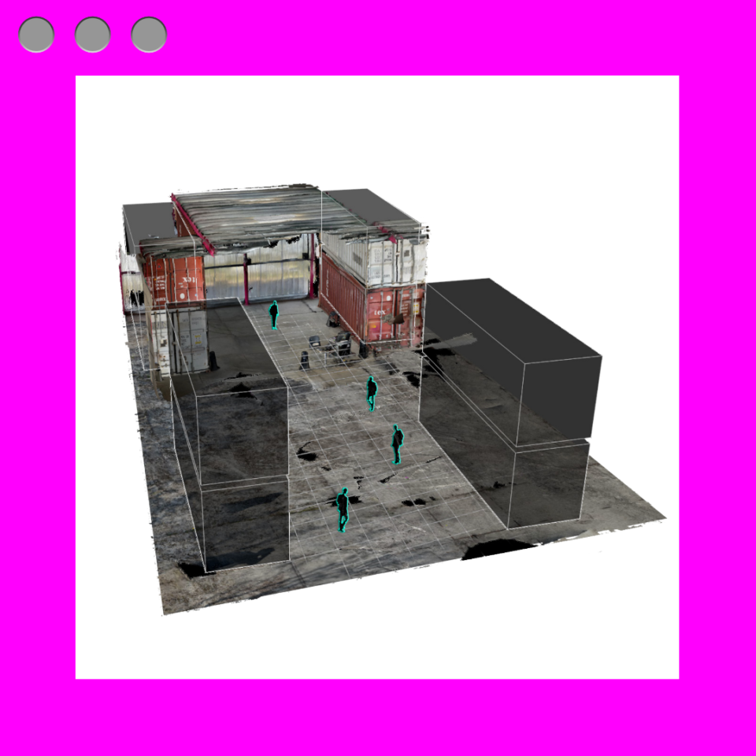
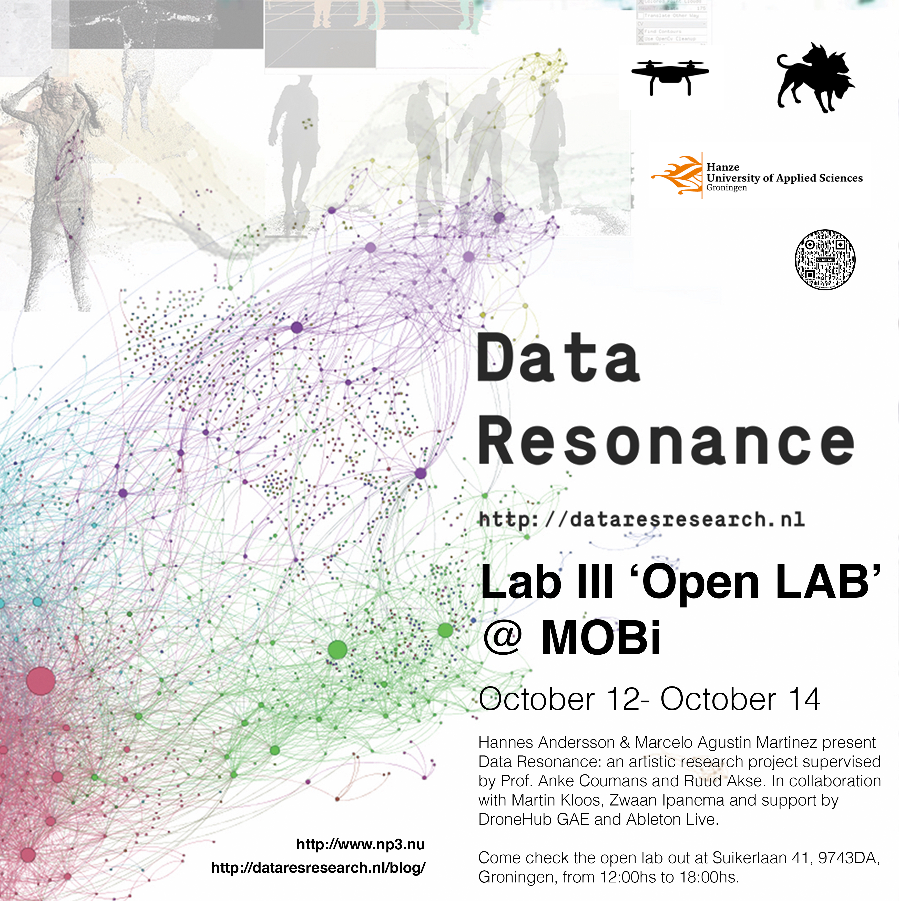
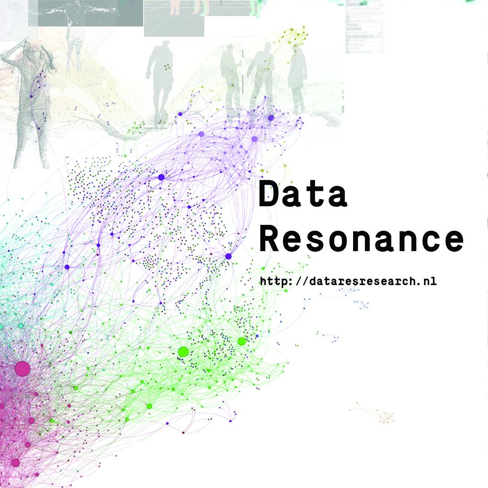
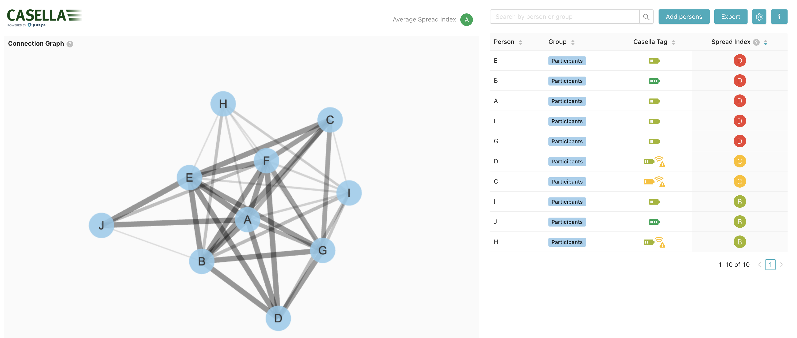
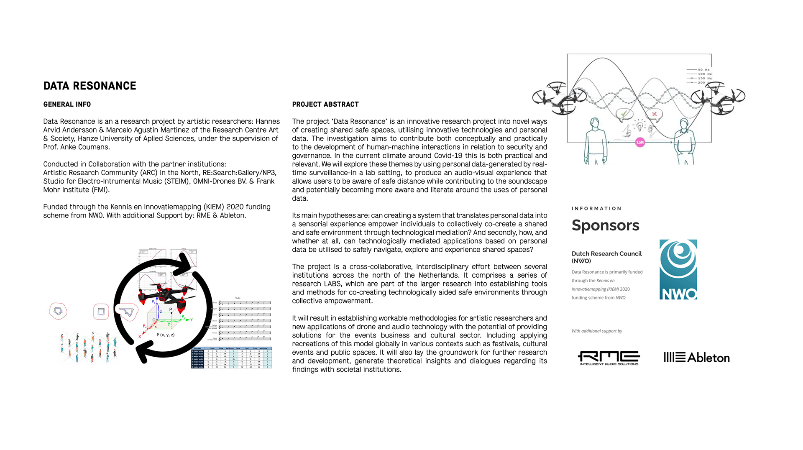

01 — Sound · Data · Performance · Sonification

Data Resonance — spatial data network visualisationThis practice-based research project is driven by the Lectoraat of the Minerva Faculty of Hanze Hogeschool in Groningen and funded by the Knowledge Innovation Mapping (KIEM 2020), led by Hannes Andersson and Marcelo Agustín Martínez, supervised by Prof. Anke Coumans and Ruud Akse.
It explores the themes of data surveillance, data dignity, the emotionality of data and its resonance in embodied experience — through psychoacoustics and performative sonification. Motivated by the societal implications of the Covid-19 pandemic and the continuing importance and implications of data in the context of security and governance.
By making apparent and transparent how a surveillance machine collects data in a defined space through emotional resonance — does this create a more embodied experience in relation to data, defined by its emotional affect and our relationship to a space shared with surveillance technologies?
This 11-month project took place throughout 2021. It aimed to be a collaborative project across prominent institutions in the Netherlands, including Hanze Hogeschool, RE:Search Gallery, STEIM, and Waag.

Lab III 'Open LAB' @ MOBi — October 2021
Data Resonance — project graphic
Casella / Pozyx — real-time proximity tracking interfaceTo investigate these questions, the project translates real-time spatial data into sounds and lights played back within — and present in — the environment. The chosen mediums, sound and light, were selected for their capacity to generate instinctual emotional responses and their structural coherence as data outputs.
The project draws on an unlikely model: the dance floor. Large groups of people on a dance floor can coordinate complex movement in complete freedom — without instruction — guided only by a shared soundscape. This self-organisation demonstrates that harmony and rhythm can act as distributed, embodied regulatory systems.
What would happen if spatial relationships — distance between people — were translated into musical notes? What if closeness produced dissonance, and safe distance produced harmony? The research explores this feedback loop as a form of emotional, non-coercive governance.

In the context of the Covid-19 era, a new paradigm of public space in relation to safety was being reassessed in an already data-driven world. Governments relied on data to make decisions they deemed best to protect populations — but this reliance raised profound questions about privacy, dignity, and the relationship between data and the individual body.
The project positions itself against purely extractive models of data collection. It asks: what if surveillance could be redesigned to create a more transparent, local, "closed-circuit" system — where data, rather than only being collected, is translated into a signal beamed back to the individuals it concerns? Using drones as a reference point — dystopian surveillance instruments reimagined as artistic tools — the project deconstructs data collection through a subversive and trans-disciplinary view.
This culminated in a presentation at STAMPA #17 at MOBi (NP3/RE:Search Gallery, Groningen), where both Data Resonance and Dronin v.1.0 were presented. Dronin is an autonomously flying musical instrument — a drone equipped with a positional sensor that translates its spatial data into an audio signal, playing music as it flies a pre-programmed path through the air. Made with support from DroneHub GAE, with Hannes Andersson and Martin Kloos.